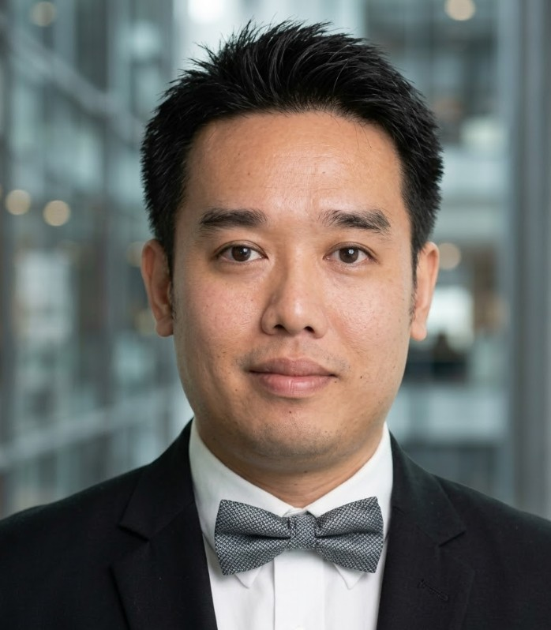

Professional Biography
Senior Automation and Robotics Engineer with 12+ years of hands-on experience designing, programming, and deploying automated production systems across 6 countries — Myanmar, Singapore, Malaysia, Indonesia, China, and the USA. I integrate PLCs, collaborative robots, machine vision, servo motion control, and SCADA platforms to build production-ready machines for semiconductor, energy, and manufacturing clients worldwide.
Global Engineering Journey
My career began at the intersection of mechanical precision and software logic — programming PLCs and commissioning servo-driven automation in Myanmar and Singapore. At Hirata FA Engineering, I delivered high-speed pick-and-place systems for Foxconn (Shenzhen), Honda Motor (Indonesia), and Dyson’s V8/V10 vacuum motor lines spanning Malaysia, Singapore, and Indonesia — programming Hirata’s AR-V1000H30 and AR-F650HCs robotic platforms.
At Willowglen Services, I architected enterprise SCADA systems for Singapore’s national energy grid — 100+ distributed RTU sites monitoring power generation, gas distribution (SP Group Power Gas), and LNG terminals (SLNG), achieving 99.9% system uptime for critical infrastructure serving millions.
Most recently at Kowa Skymech, I led the design and delivery of 20+ collaborative robot machines for Thermo Fisher Scientific’s semiconductor wafer handling, an AMR-Cobot system for Infineon’s test handler automation, and a full-stack Ignition SCADA solution for Coca-Cola.
The OT-IT Bridge
I am proficient across the entire industrial stack — from low-level motion control and safety circuits, up through distributed HMI/SCADA networks, and out to modern data pipelines and machine learning algorithms. I work with UR cobots, FANUC, ABB, and Hirata robots; Siemens, Allen-Bradley, and Beckhoff PLCs; and AI/ML frameworks like PyTorch, TensorFlow, and Vertex AI.
Currently pursuing my M.S. in Computer Science (Data Science & AI) at Hood College, I am deepening my expertise in Explainable AI, LLM applications for industrial systems, and advanced predictive maintenance — bridging the gap between operational technology and modern AI.
Philosophy & Vision
I believe in “Pragmatic Innovation” — using the latest technologies like Deep Learning, LLMs, and IIoT not just for novelty, but to solve real, hard-nosed industrial problems. My unique blend of OT (Operational Technology) and IT (Information Technology) skills allows me to translate “digital transformation” buzzwords into working code and efficient systems.
My goal is to help manufacturing companies realize the promise of Industry 4.0 — not through slides and strategy decks, but through working code, reliable robots, and measurable results.
